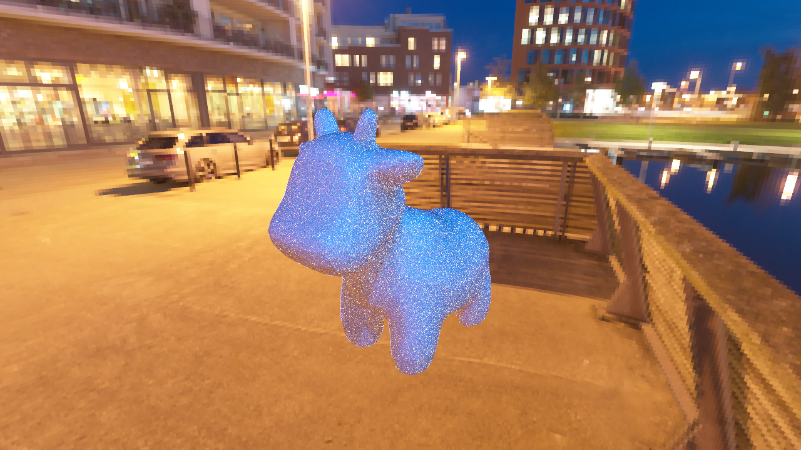

**Assignment 3 Report**
AndrewID: zhengren
(##) About this template
* You can view your writeup by opening it in a browser - right click this file and open with your browser of choice.
* Replace reference images with your own screenshots or renders when applicable.
* Include descriptions of any encountered problems and the time you spent on each task.
(##) A3T1 CHECKPOINT
You do not need any screenshots for this task.
This task is pretty simple and spend within several hours finishing that.
Your completion will be graded based on the reference `test.a3.task1.cpp` file and
checking that camera rays properly fill up the camera view frustrum.
(##) A3T2 CHECKPOINT
You do not need any screenshots for this task.
This task is easier than BVH because what we need to do is just implement the intersection algorithm based on the slides provided and handled some edge cases.
Spend about half a day to finish the task.
Your completion will be graded based on the reference `test.a3.task2.*.cpp` files and
checking that rendering spheres and triangles works properly.
(##) A3T3 CHECKPOINT
You do not need any screenshots for this task.
This task is the most difficult and time-consuming part. The first problem is to understand data structures, parameters that are passed in and returned.
The second problem is to fully understand what BVH mean, in class we only introduce conceptions but not implement details, I spend a lot of time understanding what to return,
what function to use, and most importantly, how to compute the best partition using compute_buckets method.
The ray intersection is also hard because at first I don't understand the whole process, what's the difference between bbox().hit and primitives.hit()? One returns a bool value
and the other returns a trace data. Why "front-to-back" method is faster? As I dive deeper, I get a better understanding.
Task 3 takes me almost have a week, yet still have no confidence that I implement all of them right.
Your completion will be graded based on the reference `test.a3.task3.*.cpp` files and
checking that the generated BVH looks reasonable and rendering large meshes is fast and correct.
(##) A3T4 FINAL
You do not need any screenshots for this task.
About half a day is spent on task 4. Lambertian is quite easy to understand. The hardest part for this task is to understand the procedure of sampling light and understand what function is usefule.
First get scatter result, then create a new ray and trace that ray, finally modify radiance.
Your completion will be graded based on the reference `test.a3.task4.*.cpp` files and
checking that rendering lambertian materials look correct.
(##) A3T5 FINAL
You do not need any screenshots for this task.
Several days are spent doing this task but still can't finish.
I can implement mirror correctly, but my refract function seems not correct for some unkown reason, leading to an incorrect glass scatter.
There're several situations for refract: IOR=1, light doesn't change direction; IOT!=1, TIR and normal refraction.
However, when IOR = 1, TIR = false, refract returns -out_dir, and attenuaiton = transmittance. However, There is shadow and a hemi-transparent sphere if transmittance is not set to white.
Otherwise, the image always looks black.
Your completion will be graded based on the reference `test.a3.task5.*.cpp` files and
checking that rendering mirror, refract and glass materials look correct.
(##) A3T6 FINAL
You do not need any screenshots for this task.
1 day is spent on this task once you understand how direct_lighting works, which is the most difficult part. You need to understand what the weight is, how two
brdf is averaged and how to trace that ray.
Your completion will be graded based on the reference `test.a3.task6.*.cpp` files and
checking that there is an improvement between using task 4 direct lighting and using task 6 direct lighting.
(##) A3T7 FINAL
You do not need any screenshots for this task.
1 day is spent on this task too. And hald a day is spent on understanding the algorithm. Uniform sample is quite simple, but the other one is not.
To finish this task, I have a better understanding about what pdf is and how to convert coordinates. The key idea about pdf is to calculate pdf in texture space seperately,
and thus use pdf to get cdf.
The key mapping relationship is to map texture coordinate(u, v), sphere coordinate(theta, phin) and 3D coordinate in Scotty3D(x, y, z). Inversely, once get (x,y,z),
convert the coordinate to (u, v) and get the corresponding pdf.
Your completion will be graded based on the reference `test.a1.task7.*.cpp` file and
checking that rendering scenes with environment lighting yields correct sampling.
(##) RENDERED IMAGE FINAL
Your image:

Explanation of what it is and how you made it:
Any free model sources you need to credit?
(##) EXTRA CREDIT FINAL
Use this section to explain any extra credit implementations you have made.
(##) Feedback
Use this section to provide feedback about the assignment.